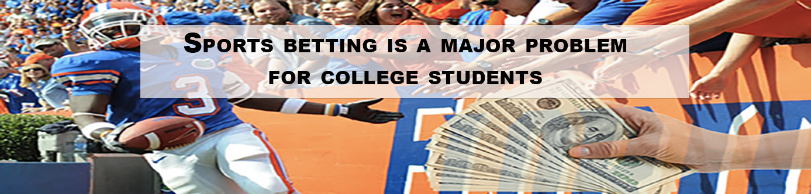

By Colin McNamara
May 2, 2023
Only 10 states, including Washington, D.C., allow 18-year-olds to bet on sports, yet it has become extremely popular among college students.
Roughly 67% of all college students sports bet, according to a study conducted by the National Council on Problem Gambling. So, how do students gain access to sports betting?
LSU Sports Betting. Credit: The New York Times
Cryptocurrency and Sports Betting. Credit: 99Bitcoins
While there are many loopholes, such as using a parent’s personal information, the most common way 18-year-olds sports bet is through offshore sportsbooks. These sportsbooks are stationed outside of the U.S., which allows them to accept online bets without breaking any federal or state laws, but it also means they are unregulated. Most offshore sportsbooks cater to 18-year-olds and are commonly promoted on social media.
“I don’t use any U.S. sportsbooks. It’s all international sportsbooks right now since they haven’t legalized it in Florida yet,” 21-year-old Peter Noce, a student at Flagler College and avid sports better, said. “It works well because you can, you know, deliver it into crypto.”
Some offshore sportsbooks operate entirely on cryptocurrency, which can make the experience confusing for unfamiliar users. However, Noce prefers the use of crypto due to its efficiency and low transaction fees.
There are restrictions on the use of offshore sportsbooks in some states, though. While there are no federal laws that restrict offshore sportsbooks, many states have made it either illegal to use unauthorized sportsbooks or bet on sports in any form, according to the American Gaming Association.
“I would say to the people that are betting in states that don’t allow you to, you got to be careful,” Noce said. “You just have to be very aware and do your research on it, because if you don’t … that can lead to a disaster.”
Even if you follow all state laws, legal sports betting can still lead to a disaster.
Sports betting on college campuses. Credit: PBS NewsHour
Strictly looking at sports betting from a financial standpoint, the odds are already stacked against you. Roughly 3%-5% of sports bettors earn money in the long run, according to SIT News.
“I think it’s best when people wager recreationally and not expecting to make a lot of money. You should never wage more than you can lose,” Bennett Conlin, a sports betting reporter, said. “It’s kind of hard to do in a regulated market too, because a lot of notable sportsbooks like DraftKings and FanDuel, for example, if you’re winning at a really high-level they tend to limit you significantly if you’re profiting a lot, which makes it hard to make any substantial money.”
Not to mention the addictive nature of gambling, which can turn a few losses into substantial debt. With an abundance of professional sports games occurring every week, it can be easy for bettors to try and win back their losses by wagering on another game.
“I certainly know that I have friends and other people, whether it was in college or just after college, who would then sort of chase their losses,” Conlin said.
Even successful bettors, like Noce, are prone to major losses. His most significant loss came at the beginning of the 2022 NFL season when he made multiple bets, which totaled $5,000, on potential Super Bowl matchups. The last bet standing relied on the Bengals making it to the Super Bowl, but they lost to the Chiefs in the AFC Championship game, costing Noce a potential payout of $40,000.
“It was a tough one to swallow,” Noce said. “Not capitalizing kind of hurt a little bit, but, you know, that’s the name of the game.”
Conlin believes sports betting could be legalized in more than 40 states within the next five years, and with its popularity growing, college students need to act responsibly.
“If you start sports betting and you don’t have a plan to gamble responsibly, it can be really easy to make irresponsible decisions,” he said. “I think it’s easy for college kids to get sort of carried away when they’re sports betting, and that can sort of spiral over time.”
“It’s pretty easy to either chase wins or chase losses, and I think it’s hard for most college kids to process how easy it is to quickly lose money when you’re betting.”
-Bennett Conlin
Sports Betting Revenue Increase Credit: Statista